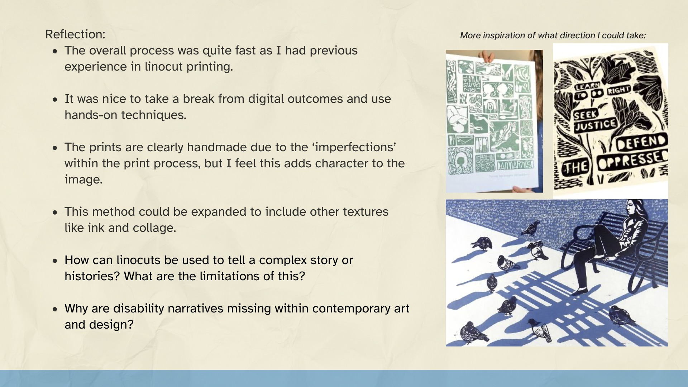
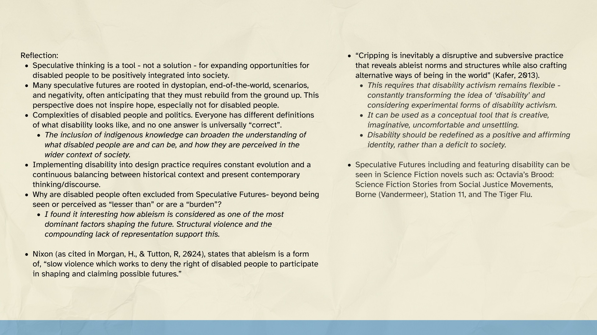
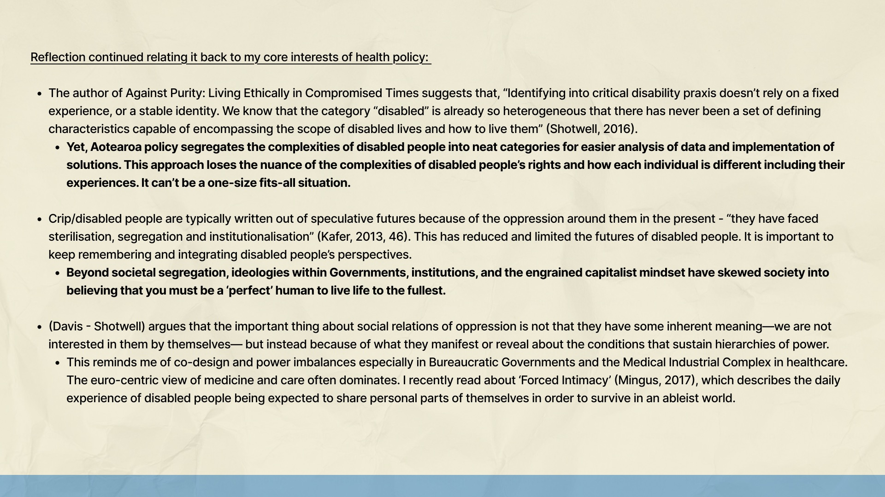

Building a visual dialogue between disability perspectives and public policy through textile activism and participatory design.
This document outlines my design research proposal for integrating Design Justice Practices within the context of Disability Policy in Aotearoa. I have expanded my research to include Speculative Futures in the context of Disability, textile activism, Accessible Co-Design processes, and the current disability policy landscape in Aotearoa. I propose creating multiple textile artworks to help unlock conversations about the limitations laws have on people with disabilities. This artwork would be presented to politicians to show the barriers they impose on people with disabilities and that it is important to co-design with disabled communities to ensure policies positively define their understanding of disabilities. In addition, sending a message through the artwork that labels do not fully represent them as a person or as a community.
Warning: This is a lengthy portfolio piece, it will take roughly 15 minutes to skim-read.
Part 1:
Design Sprints
Concept Generation
Mini Background Research
Current Aotearoa Disability Policies - gaps, challenges, and opportunities for change
Vibe Boards
Part 2:
Research Proposal
Design Response
Research Question
Methodology
Part 1:
Design Spints



Concept Generation
Mini Background Research
Current Aotearoa Disability Policies - gaps, challenges, and opportunities for change